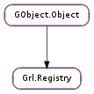

| static | get_default() |
| add_config(config) | |
| add_config_from_file(config_file) | |
| add_directory(path) | |
| get_metadata_keys() | |
| get_plugins(only_loaded) | |
| get_sources(ranked) | |
| get_sources_by_operations(ops, ranked) | |
| load_all_plugins() | |
| load_plugin(library_filename) | |
| load_plugin_by_id(plugin_id) | |
| load_plugin_directory(path) | |
| lookup_metadata_key(key_name) | |
| lookup_metadata_key_desc(key) | |
| lookup_metadata_key_name(key) | |
| lookup_metadata_key_relation(key) | |
| lookup_metadata_key_type(key) | |
| lookup_plugin(plugin_id) | |
| lookup_source(source_id) | |
| metadata_key_validate(key, value) | |
| register_metadata_key(param_spec) | |
| register_metadata_key_full(param_spec, key) | |
| register_metadata_key_relation(key1, key2) | |
| register_source(plugin, source) | |
| restrict_plugins(plugins) | |
| unload_plugin(plugin_id) | |
| unregister_source(source) |
None
| Name | Parameters | Return | Description |
|---|---|---|---|
| source-added | Grl.Source | Signals that a source has been added to the registry. | |
| source-removed | Grl.Source | Signals that a source has been removed from the registry. |
| Name | Type | Access |
|---|---|---|
| parent | GObject.Object | r |
Bases: GObject.Object
| Returns: | a new or an already created instance of the registry. It is NOT MT-safe |
|---|---|
| Return type: | Grl.Registry |
As the registry is designed to work as a singleton, this method is in charge of creating the only instance or returned it if it is already in memory.
| Parameters: | config (Grl.Config) – a configuration set |
|---|---|
| Raises: | GLib.GError |
| Returns: | True on success |
| Return type: | bool |
Add a configuration for a plugin/source.
| Parameters: | config_file (str) – a key-value file containing the configuration |
|---|---|
| Raises: | GLib.GError |
| Returns: | True on success |
| Return type: | bool |
Load plugin configurations from a .ini-like config file.
| Parameters: | path (str) – a path with plugins |
|---|
Set this path as part of default paths to load plugins.
| Returns: | a GLib.List with all the available Grl.KeyID s. The content of the list should not be modified or freed. Use GLib.List.free () when done using the list. |
|---|---|
| Return type: | [int] |
Returns a list with all registered keys in system.
| Parameters: | only_loaded (bool) – whether the returned list shall include only loaded plugins |
|---|---|
| Returns: | a GLib.List of available Grl.Plugin s. The content of the list should not be modified or freed. Use GLib.List.free () when done using the list. |
| Return type: | [Grl.Plugin] |
This function will return all the available plugins in the registry.
If only_loaded is True, the plugin list will contain only plugins that are loaded.
| Parameters: | ranked (bool) – whether the returned list shall be returned ordered by rank |
|---|---|
| Returns: | a GLib.List of available Grl.Source s. The content of the list should not be modified or freed. Use GLib.List.free () when done using the list. |
| Return type: | [Grl.Source] |
This function will return all the available sources in the registry.
If ranked is True, the source list will be ordered by rank.
| Parameters: |
|
|---|---|
| Returns: | a GLib.List of available Grl.Source s. The content of the list should not be modified or freed. Use GLib.List.free () when done using the list. |
| Return type: |
Give an array of all the available sources in the registry capable of perform the operations requested in ops.
If ranked is True, the source list will be ordered by rank.
| Raises: | GLib.GError |
|---|---|
| Returns: | False % is all the configured plugin paths are invalid, True % otherwise. |
| Return type: | bool |
Load all the modules available in the default directory path.
The default directory path can be changed through the environment variable %GRL_PLUGIN_PATH and it can contain several paths separated by ”:”
| Parameters: | library_filename (str) – the path to the so file |
|---|---|
| Raises: | GLib.GError |
| Returns: | True if the module is loaded correctly |
| Return type: | bool |
Loads a module from shared object file stored in path
| Parameters: | plugin_id (str) – plugin identifier |
|---|---|
| Raises: | GLib.GError |
| Returns: | True if the plugin is loaded correctly |
| Return type: | bool |
Loads plugin identified by plugin_id.
This requires the XML plugin information file to define a “module” key with the name of the module that provides the plugin or the absolute path of the actual module file.
| Parameters: | path (str) – the path to the directory |
|---|---|
| Raises: | GLib.GError |
| Returns: | True if the directory is valid. |
| Return type: | bool |
Loads a set of modules from directory in path which contains a group shared object files.
| Parameters: | key_name (str) – the key name |
|---|---|
| Returns: | The metadata key, or Grl.METADATA_KEY_INVALID if not found |
| Return type: | int |
Look up for the metadata key with name key_name.
| Parameters: | key (int) – a metadata key |
|---|---|
| Returns: | metadata key description, or None if not found |
| Return type: | str |
Returns key description.
| Parameters: | key (int) – a metadata key |
|---|---|
| Returns: | metadata key name, or None if not found |
| Return type: | str |
Returns key name.
| Parameters: | key (int) – a metadata key |
|---|---|
| Returns: | a GLib.List of related keys, or None if key is invalid. |
| Return type: | [int] |
Look up the list of keys that have a relation with key.
key is included in that list.
| Parameters: | key (int) – a metadata key |
|---|---|
| Returns: | metadata key type, or GObject.TYPE_INVALID if not found |
| Return type: | GObject.GType |
Returns key expected value type.
| Parameters: | plugin_id (str) – the id of a plugin |
|---|---|
| Returns: | The plugin found |
| Return type: | Grl.Plugin |
This function will search and retrieve a plugin given its identifier.
| Parameters: | source_id (str) – the id of a source |
|---|---|
| Returns: | The source found. |
| Return type: | Grl.Source |
This function will search and retrieve a source given its identifier.
| Parameters: |
|
|---|---|
| Returns: | True if complies |
| Return type: |
Validates value content complies with the key specification. That is, it has the expected type, and value are within the range specified in key (for integer values).
| Parameters: | param_spec (GObject.ParamSpec) – The definition of the key to register |
|---|---|
| Raises: | GLib.GError |
| Returns: | The Grl.KeyID registered. |
| Return type: | int |
Registers a metadata key
| Parameters: |
|
|---|---|
| Raises: | |
| Return type: |
| Parameters: |
|---|
Creates a relation between key1 and key2, meaning that the values of both keys are somehow related.
One example of a relation would be the one between the URI of a media resource and its mime-type: they are both tied together and one does not make sense without the other.
Relations between keys allow the framework to provide all the data that is somehow related when any of the related keys are requested.
| Parameters: |
|
|---|---|
| Raises: | |
| Returns: | |
| Return type: |
Register a source in the registry with the given plugin information
| Parameters: | plugin_id (str) – the identifier of the plugin |
|---|---|
| Raises: | GLib.GError |
| Returns: | True % on success. |
| Return type: | bool |
Unload from memory a module identified by plugin_id. This means call the module’s deinit function.
| Parameters: | source (Grl.Source) – the source to unregister |
|---|---|
| Raises: | GLib.GError |
| Returns: | True if success, False % otherwise. |
| Return type: | bool |
Removes the source from the registry hash table